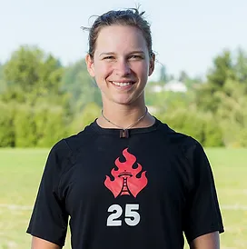
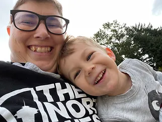

Coaches

Alyssa Weatherford, Cofounder and Director
- Alyssa started playing Ultimate in 2000 at New Options Middle School and took her passion for the sport to Nathan Hale High School. She played her college career at Western Washington University, captaining in her last three seasons. She has now coached at WWU since 2011. Alyssa joined Riot in 2007, and is currently in her second season as captain. Her youth coaching experience includes the Seattle Academy of Arts and Science, Hamilton International Middle School, and Fryz ultimate club. Alyssa has also had the opportunity to coach internationally at clinics in Mexico, Colombia, Panama, Venezula, Argentina, and Brazil. She loves coaching players who work hard, strive to be leaders, and respect the people around them.

Shannon O' Malley, Cofounder
- Shannon began playing Ultimate at Eckstein Middle School in the 6th grade. They then went on to play at Nathan Hale High School, for the club team MoHo, and as a senior, started playing on Seattle Riot. Shannon also participated on the Jr. National team twice in '04 and '06. On to college, Shannon attended the University of Washington, winning Silver in '09 and the Callahan award in 2010. After graduating Shannon continued to play with Seattle Riot until 2015. Shannon played Seattle Mixtape as a practice player in 2017 and is now retired from playing competitive Ultimate. Shannon has been coaching since they were 16, Shannon emphasizes character growth, problem solving, and working as a unit on the field and off.

Benita Ki
- Benita learned to play ultimate in 2005 during her junior year of high school; the metro Portland schools scrimmaged each other weekly. She played at the University of Puget Sound, captaining for two years. She's played a lot of mixed league, dabbled in club (including a year with Schwa and most recently, Mint), and is an avid goaltimate fan. She coached three years for Pacific Lutheran University Reign Women. As a coach, she enjoys working alongside her players to try new things, grind through challenges, and grow as holistic athletes.

Laura To
- Laura started playing ultimate in elementary school at Kimball Elementary School. She has played for Ada Mercer MS, Franklin HS, DiscNW YCC, U20 World Juniors, and Seven Hills! She has coached for soufend high school girls and volunteered at multiple frisbee camps. Laura looks forward to coaching youth athletes that care about the ultimate community, are passionate about growth, and celebrate the teams hard work.

Marlie Somers
- Marlie found ultimate as a freshman in college as a founding member of the women's team at UMBC, outside Baltimore. They fell in love with the community aspects and have found playing and coaching ultimate a joy, especially as a branch of their lifelong commitment to experiential and justice-centered education. She believes in the power of ultimate to hold both competition and fun, so each player can find their own particular expression within the agreed-upon boundaries of the game while also building community.